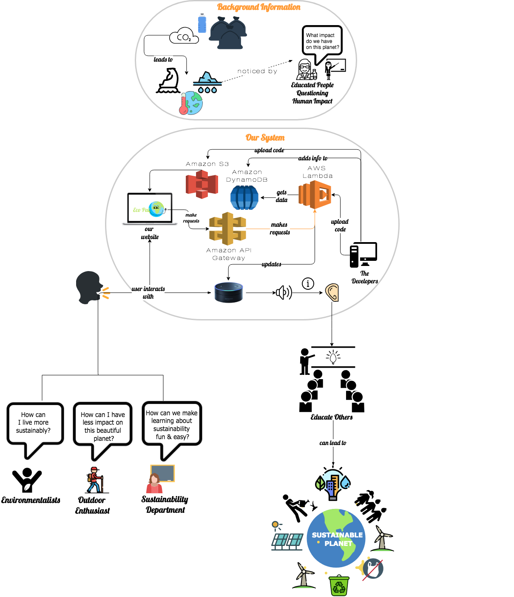

About Us
We wanted to create something to help teach people about sustainable living. According to the Japanese Plastic Waste Management Institute, Japan's recycling rate (77%) is over 3 times as much as the rate in the US (20%). Japanese recycling culture is something that is instilled from a young age. The U.S. creates the most waste in the world and we believe a major issue with sustainability is a lack of education. We hope to educate others and spread the idea that many small incremental changes will one day lead to great progress in the sustainable movement. In order to educate people, we decided to create an Amazon Alexa skill that provides information to users about how to reduce their global impact.
About Eco
As mentioned earlier, Eco is an Alexa skill. The Eco system is meant to give individuals a unique and interactive way of learning about sustainabiity from the comfort of your home or whever you may have an Alexa compatible device.
What is an Alexa skill?
First of all, Alexa is Amazon's Voice Service (AVS) and the "brain" behind many devices- like the Echo family of devices. Alexa provides capabilities, or skills, that enable customers to create a more personalized experience.
To watch an introduction to Amazon Alexa Skills you can watch the linked video. It's a short video, under 2 minutes long, that briefly explains what a skill is.
Our system vision
Global impact has continually grown as a big topic of discussion amongst political heads and the general population. As populations grow, our impact on our planet becomes more significant. Earth’s changes have not gone unnoticed by educators and the public- from the melting ice caps to the increase in extinction rate.
This system will be a an Amazon voice service - also known as an Alexa skill. An Alexa skill can only be used by Alexa compatible devices. Users will be able to gain access to this skill by enabling the skill through Amazon's skills page.
Therefore, users can gain access to sustainability information on their Alexa capable devices. By enabling the Alexa skill via Amazon’s website users can gain access to our Alexa skill. Our Alexa skill focuses on sustainability information.
Users will be able to ask Alexa questions ranging from “Alexa, how can I be more sustainable?” to “What can I put in my recycling bin?” The answers will vary depending on the question and questions can have multiple answers to ensure the user is interested. There’s a lot of confusion and lack of education about sustainability and how little steps we take in our everyday life could make a huge difference.
With our system, we hope to start by educating individuals who are interested in the well-being of this planet. Eco is intended to be a fun and interactive way of learning about our global impact with hopes that people will continue to educate others around them.
Features
For some, there is a lot of hesitation to move towards a more sustainable lifestyle because individuals believe it is inconvenient, not practical, or just don't believe our actions create an impact on our planet.
With this in mind, we decided to give information to our users to show how easy it is to live more sustainabily and show how little changes that we make in our everyday life can create a huge impact on our planet. Our features that help us do this, include giving:
- Random sustainability tips.
- Random sustability tips based on location {home, work, school}.
- Information on recycling & waste reduction specific to certain materials.
- The location of the closest recycling center.
- Random facts related to climate change.
The answers will vary depending on the question, and questions can have multiple responses to ensure that the user is engaged. With our system, we hope to start by educating individuals with the hope that they will continue to educate others around them.
See the developer guide for instructions on how to get it up and running.
Read our user manual to see how to use Eco.
Our Team
We are seniors studying Computer Science at California State University of Long Beach. As apart of our Software Engineering Project I course, we were tasked to come up with a two-semester long project idea, document it, and implement the system.
Meet the Team
Contact our team at ✉ eco.thealexaskill@gmail.com!